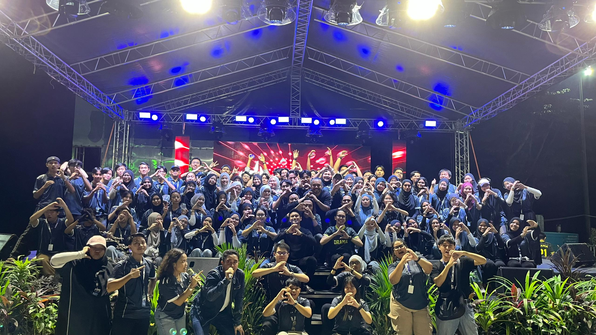
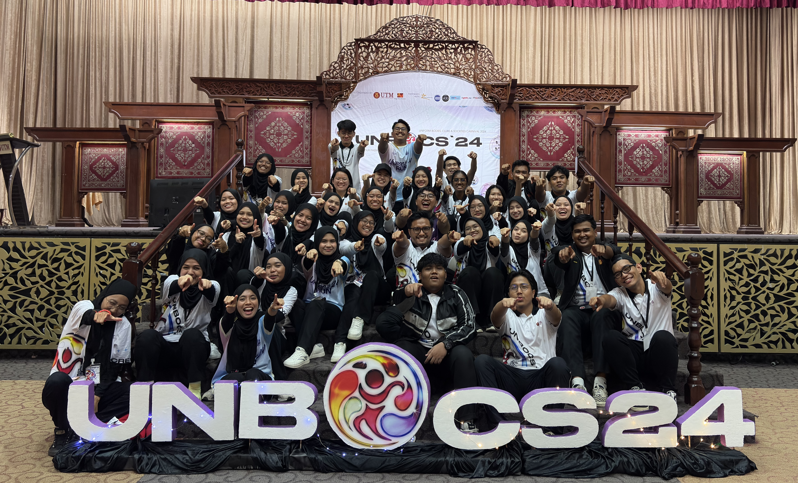
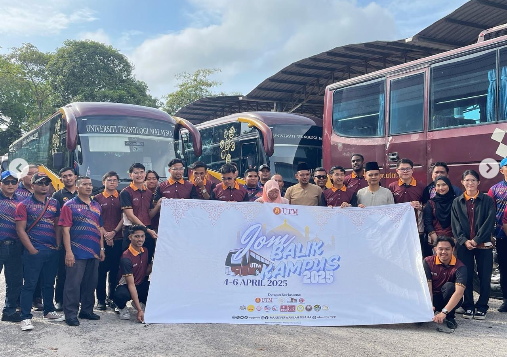
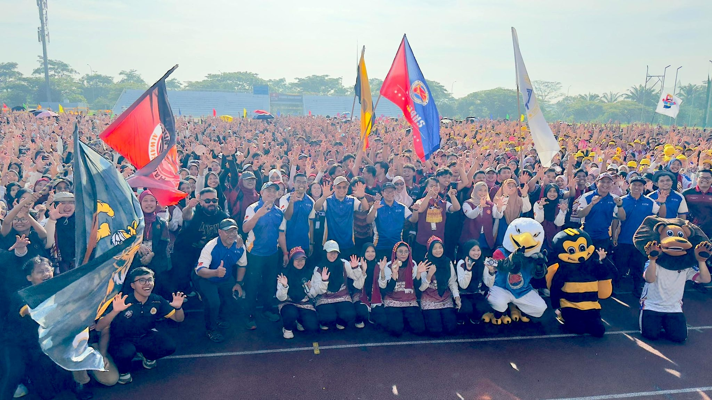
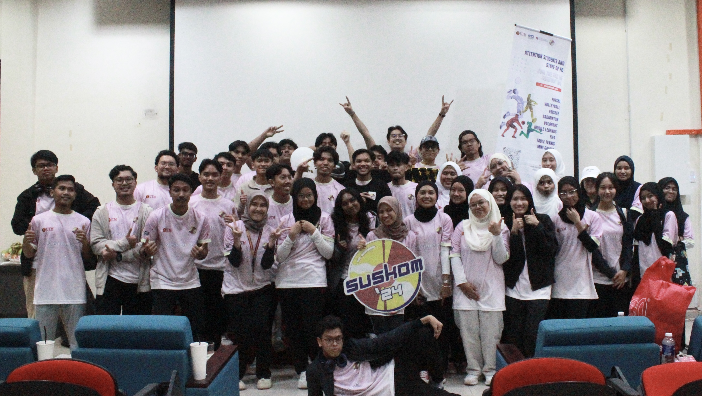
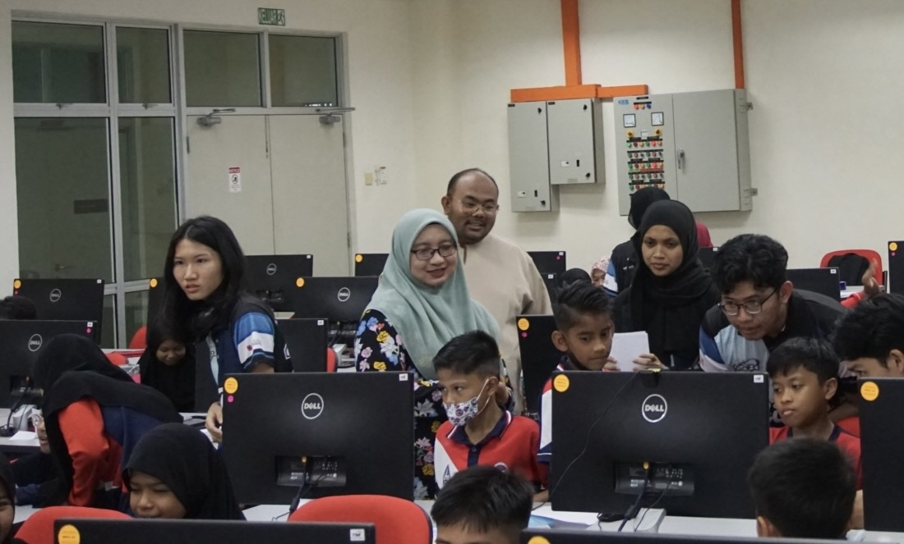

DATARAN UTM, 14 — 23 November 2025
One of the biggest university annual event held during the convocation week, encompass artist live performance, student cultural performance, fun activities, food fest and various booths.

DEWAN SRI ISKANDAR (DSI), 10 — 12 October 2024
Univeristy annual event that serves as a platform to promote various sociesties and clubs to new intake students and boost community engagement among students.

UTM FLEET, 4 — 6 April 2025
Annual event organised by the UTM Student Representative Council to provide affordable transport for students to go back to their hometown or return to the campus after Hari Raya Aidilfitri.

STADIUM AZMAN HASHIM, 1 October 2025
Annual event held during the Orientation Week that aims to form unity among freshies through sports.

FACULTY OF COMPUTING, 19 — 21 December 2024
Annual event organised by the Persatuan Mahasiswa Sains Komputer (PERSAKA) to encourage healthy lifestyle and engagement among FC community through various sport tournaments.

FACULTY OF COMPUTING, 7 June 2024
Event organised by the Persatuan Mahasiswa Sains Komputer (PERSAKA) to carry out AI and robotics hands-on activities and seminar involving primary and secndary school students, as well as Faculty of Computing students.